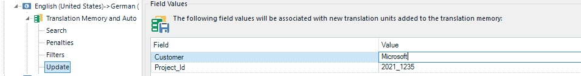

Translation Memory Fields Update
The setup of a translation memory can contain so-called TM fields. This is meta information that can be added to each translation unit, e.g. Customer, Project id, Department, etc. For more information see the corresponding section of the Translation Memory API.
When you handle a project that belongs to the document type Technical documentation, you will want to make sure that every translation unit that is created, edited, and updated during the project lifecycle receives the TM field value Type = Technical documentation.
The screenshot below illustrates how, for example, the TM fields Client and Project id are set through the user interface of Trados Studio :

Retrieving TM Fields
In order to set the TM fields to use for a project you require the functionality of the Translation Memory API. Please refer to the chapter Required References and Namespaces for detailed information on the libraries and the namespaces that you need to add to your project in order to use the TM API.
You can configure the fields that should be used and updated in your project through the ProjectSettings property, whose value has to be set to the collection of field values, e.g.:
tmSettings.ProjectSettings.Value = fvCollection;
The actual project fields values need to be generated through the functionality offered by the TM API. In the example below you see how to use the FieldValues class of the TM API to generate the field value collection to use for your project. In the example below the project should be configured to apply the value Type = Technical documentation.
FieldValues fieldValuesCollection = new FieldValues();
FileBasedTranslationMemory tm = new FileBasedTranslationMemory(@"c:\ProjectFiles\Tms\General En-De.sdltm");
FieldDefinition field = tm.FieldDefinitions["Type"];
FieldValue fv = field.CreateValue();
fv.Name = "Technical documentation";
fieldValuesCollection.Add(fv);
tmSettings.ProjectSettings.Value = fieldValuesCollection;
Retrieving Fields from the TM Setup
In the example above we simply hard-coded the field name and value to apply to the project. In your implementation, however, you might need to retrieve the available TM fields (if any) from the setup of a selected TM. Fields can be, for example, simple text fields, picklist fields that allow only one or multiple values, etc. The sample code below outlines how to use the TM API functionality to open a file TM (* .sdltm) and retrieve the field names and values. After opening the TM, the code loops through all available fields and adds their names to a string variable. If a field is found to be a single or multiple value picklist, the values, too are read and appended to the string variable. You might require such a logic to fill, e.g. a combo list with the names of available fields and values, so that they can be selected by the user at runtime. This functionality may also be relevant for setting project filters (see next chapter, Translation Memory Filter Settings).
private void GetTmSetup()
{
FileBasedTranslationMemory tm = new FileBasedTranslationMemory(@"c:\ProjectFiles\Tms\General En-De.sdltm");
FieldDefinition def = new FieldDefinition();
foreach (FieldDefinition tmField in tm.FieldDefinitions)
{
string tmSetup = string.Empty;
tmSetup += tmField.Name;
if (tmField.ValueType == FieldValueType.MultiplePicklist ||
tmField.ValueType == FieldValueType.SinglePicklist)
{
for (int i = 0; i < tmField.PicklistItems.Count; i++)
{
tmSetup += tmField.PicklistItems[i].Name;
}
}
}
}
See Also
Translation Memory Search Settings